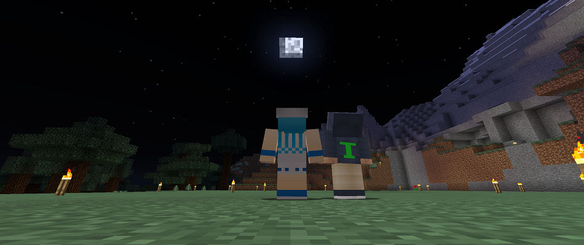
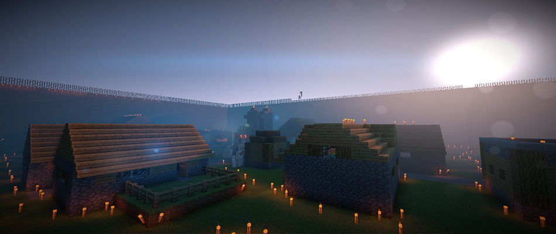

<!DOCTYPE html>
<html lang="ja">

<head>
	<meta charset="UTF-8">
	<meta name="viewport" content="width=device-width, initial-scale=1.0">
	<title>スギタクソフトウェア</title>
	<!-- MainCSS -->
	<link href="css/style.css" rel="stylesheet" type="text/css" />
	<!-- ↓スマホ・タブレット・表示系 -->
	<link href="css/responsive.css" rel="stylesheet" type="text/css" />
	<!-- ↓ヘッダーluxbar -->
	<link href="css/luxbar.min.css" rel="stylesheet" type="text/css">
	<!-- ↓スライドショーslick -->
	<link href="slick/slick.css" rel="stylesheet" type="text/css" />
	<link href="slick/slick-theme.css" rel="stylesheet" type="text/css" />
	<script src="https://ajax.googleapis.com/ajax/libs/jquery/2.2.0/jquery.min.js"></script>
	<script src="slick/slick.min.js"></script>
	<style type="text/css">
		table {
			width: 100%;
		}

		td {
			padding: 10px 0px;
		}

		.main {
			text-align: left;
			padding: 0px 10px;
		}
	</style>
</head>

<body>
	<!-- luxbar https://balzss.github.io/luxbar/ -->
	<header id="luxbar" class="luxbar-default">
		<input type="checkbox" class="luxbar-checkbox" id="luxbar-checkbox" />
		<div class="luxbar-menu luxbar-menu-left luxbar-menu-material-indigo">
			<ul class="luxbar-navigation">
				<li class="luxbar-header">
					<a href="index.html" class="luxbar-brand">スギソフト</a>
					<label class="luxbar-hamburger luxbar-hamburger-doublespin" id="luxbar-hamburger"
						for="luxbar-checkbox"> <span></span> </label>
				</li>
				<li class="luxbar-item"><a href="index.html">ホーム</a></li>
				<li class="luxbar-item"><a href="about.html">自己紹介</a></li>
				<li class="luxbar-item"><a href="event.html">イベント情報</a></li>
				<li class="luxbar-item"><a href="minecraft.html">マイクラ鯖</a></li>
				<li class="luxbar-item"><a href="homebuilt_computer.html">自作PC紹介</a></li>
				<li class="luxbar-item"><a href="blog/index.php">スギブロ(blog)</a></li>
				<li class="luxbar-item"><a href="access/index.html">旧Nexus</a></li>
				<li class="luxbar-item"><a href="contact.html">お問い合わせ</a></li>
			</ul>
		</div>
	</header>
	<!-- スライドショー -->
	<nav>
		<ul class="slider">
			<li></li>
			<li></li>
			<li></li>
		</ul>
		<script src="javascript/slicksetting.js"></script>
	</nav>
	<!-- メイン（お知らせ） -->
	<div class="contents">
		<section>
			<h2>現在対応修正済みサイト</h2>
			<p>ホーム・自己紹介・イベント情報・過去のイベント・お問い合わせ</p>
			<h2>お知らせ</h2>
			<table border="2">
				<tr>
					<th>日付</th>
					<th width="70">状態</th>
					<th>更新内容</th>
				</tr>
				<tr>
					<td>2020/07/23</td>
					<td><a style="color: aquamarine;">更新</a></td>
					<td class="main">倉庫ページ廃止しました。<a href="blog/index.php">WordPressを利用したブログを開始しました。</a></td>
				</tr>
				<tr>
					<td>2020/05/25</td>
					<td><a style="color: aquamarine;">更新</a></td>
					<td class="main"><a href="trash_area/index.html">倉庫ページ</a>を作成。ヘッダーのリンク不具合を修正</td>
				</tr>
				<tr>
					<td>2020/05/21</td>
					<td><a style="color: aquamarine;">更新</a></td>
					<td class="main">「水晶雫（すいしょうしずく）」さんの応援バナーを設置しました。<a href="https://suishoshizuku.com/ja/">サイト</a></td>
				</tr>
				<tr>
					<td>2020/05/15</td>
					<td><a style="color: aquamarine;">更新</a></td>
					<td class="main">その他のリンクを変更・Twitterのアカウントを変更</td>
				</tr>
				<tr>
					<td>2020/05/14</td>
					<td><a style="color: aquamarine;">更新</a></td>
					<td class="main">イベントページをスマホで閲覧時に表示が崩れる問題を修正</td>
				</tr>
				<tr>
					<td>2020/05/13</td>
					<td><a style="color: red;">お知らせ</a></td>
					<td class="main">サーバーのOSをUbuntu 20.04LTSからUbuntuServer 20.04LTSに変更</td>
				</tr>
				<tr>
					<td>2020/05/12</td>
					<td><a style="color: aquamarine;">更新</a></td>
					<td class="main">お問い合わせページデザインを更新</td>
				</tr>
				<tr>
					<td>2020/05/07</td>
					<td><a style="color: aquamarine;">更新</a></td>
					<td class="main">「兎月ひろ（うずきひろ）」さんの公式ホームページのバナーを設置しました。<a href="http://uzuki-hiro.net/">サイト</a></td>
				</tr>
				<tr>
					<td>2020/05/04</td>
					<td><a style="color: aquamarine;">更新</a></td>
					<td class="main">FlashPlayer廃止完了。スライドショーには「slick」を使用</td>
				</tr>
				<tr>
					<td>2020/05/01</td>
					<td><a style="color: red;">お知らせ</a></td>
					<td class="main">ドメインを取得(sugisoft.net)</td>
				</tr>
				<tr>
					<td>2020/04/27</td>
					<td><a style="color: aquamarine;">更新</a></td>
					<td class="main">レスポンシブデザイン対応化</td>
				</tr>
				<tr>
					<td>2020/04/01</td>
					<td><a style="color: red;">お知らせ</a></td>
					<td class="main">スギタクが所属していたR☆Pazが解散し、スギソフトを設立</td>
				</tr>
				<tr>
					<td>2019/03/00</td>
					<td><a style="color: red;">お知らせ</a></td>
					<td class="main">Yahooジオシティーズ終了に伴い、しばらく改修工事をします。</td>
				</tr>
				<tr>
					<td>2015/00/00</td>
					<td><a style="color: red;">お知らせ</a></td>
					<td class="main">シェフ猫とポイズンのマインクラフトのシェフ猫のマインクラフトが「シェフ猫のゆっくりマインクラフト」になりました</td>
				</tr>
				<tr>
					<td>2015/00/00</td>
					<td><a style="color: red;">お知らせ</a></td>
					<td class="main">新しいメンバー追加　杉拓さんです</td>
				</tr>
				<tr>
					<td>2015/00/00</td>
					<td><a style="color: red;">お知らせ</a></td>
					<td class="main">チーム名がNexusForeに変わりました</td>
				</tr>
				<tr>
					<td>2015/00/00</td>
					<td><a style="color: aquamarine;">更新</a></td>
					<td class="main">ホームページ大幅アップデートをしました</td>
				</tr>
				<tr>
					<td>2015/00/00</td>
					<td><a style="color: red;">お知らせ</a></td>
					<td class="main">ポイズンさんのマインクラフトPC版が急にデモ版になってしまったために一時的にポイズンさんはマインクラフトPC版ができません</td>
				</tr>
				<tr>
					<td>2015/00/00</td>
					<td><a style="color: aquamarine;">更新</a></td>
					<td class="main">自己紹介のシェフ猫さんの一部を変更しました</td>
				</tr>
				<tr>
					<td>2015/00/00</td>
					<td><a style="color: aquamarine;">更新</a></td>
					<td class="main">トップページのNexusの画像の位置変更</td>
				</tr>
				<tr>
					<td>2015/00/00</td>
					<td><a style="color: aquamarine;">更新</a></td>
					<td class="main">トップページのNexusの画像の位置変更</td>
				</tr>
				<tr>
					<td>2015/00/00</td>
					<td><a style="color: aquamarine;">更新</a></td>
					<td class="main">おかしなところ修正</td>
				</tr>
			</table>
		</section>
		<!-- リンク集・Twitter・広告 -->
		<aside>
			<div class="box">
				<h3>他のページ</h3>
				<ul class="sidemenu">
					<li><a href="https://twitter.com/SugitakuSoftwar">Twitter</a></li>
					<li><a href="https://www.youtube.com/channel/UC9XA1cikX2tCycT-wNZ6noA">YouTube</a></li>
					<li><a href="https://qiita.com/sugitaku03031">Qiita</a></li>
					<li><a href="https://github.com/sugitaku03031">GitHub</a></li>
				</ul>
			</div>
			<div class="box">
				<h3>ブログ</h3>
				<ul class="sidemenu">
					<li><a href="blog/index.pho">スギタク-ブログ(blog)</a></li>
					<li><a href="https://sugitaku03031.fanbox.cc/">PixivFANBOX</a></li>
					<li><a href="https://ci-en.net/creator/5168">Ci-en</a></li>
					<li><a href="https://fantia.jp/fanclubs/43844">Fantia</a></li>
				</ul>
			</div>
			<div class="box">
				<h3>応援バナー</h3>
				<ul>
					<!-- 水晶雫 -->
					<a href="https://suishoshizuku.com/" target="_blank"></a>
				</ul>
				<ul>
					<!-- 兎月（ウズキ）ひろ公式サイトバナーリンク -->
					<li><a href="http://uzuki-hiro.net/" target="_blank"></a></li>
				</ul>
				<ul>
					<!-- 的良みらん -->
					<li><a href="http://archipel.cside.com/matra/matra_top.htm" target="_blank"></a></li>
				</ul>
			</div>
			<div class="box">
				<h3>Twitter</h3>
				<a class="twitter-timeline" data-height="600" data-theme="dark"
					href="https://twitter.com/SugitakuSoftwar?ref_src=twsrc%5Etfw">Tweets by SugitakuSoftwar</a>
				<script async src="https://platform.twitter.com/widgets.js" charset="utf-8"></script>
			</div>
		</aside>
	</div>
	<!-- フッター -->
	<footer>

	</footer>
	<!-- Global site tag (gtag.js) - Google Analytics -->
	<script async src="https://www.googletagmanager.com/gtag/js?id=UA-105383727-3"></script>
	<script>
		window.dataLayer = window.dataLayer || [];
		function gtag() { dataLayer.push(arguments); }
		gtag('js', new Date());

		gtag('config', 'UA-105383727-3');
	</script>
	<!--[if lt IE 9]>
	<script src="http://html5shiv.googlecode.com/svn/trunk/html5.js"></script>
	<![endif]-->
</body>

</html>